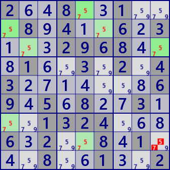
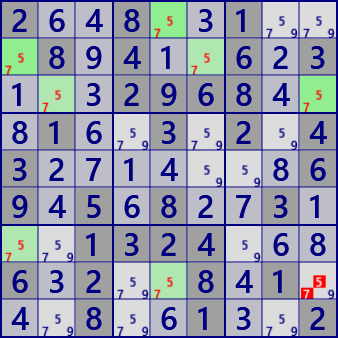

Remote Pair
RemotePair is an analysis algorithm that connects bivalue cells with a strong link.
As shown in the following figure, bivalue cells (candidate numbers are xy) are linked by a strong link.
In the figure, the cells are displayed in two groups.
There are two cells(□ and ○) with an even number of distances,
and the cell(▲) connected with these by weak links can not be either x or y.
An example of Remote Pair
 

.3..9.68...9.64..2..7..8.5.84.6.9....26...41....2.1.96.9.4..1..6..81.5...14.5..6.
2..8..1...8.4..6.3...2968...1..3.2.43.......69.5.8..3...1324...6.2..8.1...8..1..2
RemotePair program
It shows the basic structure of spreading search used in some analysis algorithms. The basic technique is queue.
- Take out the focused node from Queue.
- Processing is performed for the focused node, and the node to be processed next time is stored in the queue.
It can also be constructed by a recursive method. However, recursion has overhead of calling and returning, and the method of developing recursion is advantageous.
public bool RemotePair( ){ //RemotePairs
Prepare();
if( BVCellLst==null ) BVCellLst = pBDL.FindAll(p=>(p.FreeBC==2)); //BV:bivalue
if( BVCellLst.Count<3 ) return false;
foreach( var (CRL,FreeB) in _RPColoring()){
bool RPFound=false;
foreach( var P in pBDL.Where(p=>(p.FreeB&FreeB)>0) ){
if( (CRL[0]&ConnectedCells[P.rc]).IsZero() ) continue;
if( (CRL[1]&ConnectedCells[P.rc]).IsZero() ) continue;
P.CancelB = P.FreeB&FreeB; RPFound=true;
}
if(RPFound){ //=== found ===
SolCode = 2;
string SolMsg="Remote Pair #"+FreeB.ToBitStringN(9);
Result=SolMsg;
if(!SolInfoB) return true;
ResultLong = SolMsg;
//*** Solution screen display ***
// ...
RPFound = false;
}
}
return false;
}
RemotePair / Generation function
private IEnumerable<(Bit81[],int)> _RPColoring( ){
if( BVCellLst.Count<4 ) yield break;
// --- coloring with bivalue cells ---
Bit81 BivalueB = new Bit81(BVCellLst);
Bit81 usedB = new Bit81();
var QueTupl = new Queue<(int,int)>();
Bit81[] CRL=new Bit81[2];
CRL[0]=new Bit81(); CRL[1]=new Bit81();
int rc0;
while( (rc0=BivalueB.FindFirst_rc())>=0 ){ //Start searching from rc0
BivalueB.BPReset(rc0);
CRL[0].Clear(); CRL[1].Clear(); //Clear chain
QueTupl.Clear(); //Queue(QueTupl) initialization
QueTupl.Enqueue( (rc0,0) );
int FreeB = pBDL[rc0].FreeB;
usedB.Clear();
while( QueTupl.Count>0 ){
var (rc1,color1) = QueTupl.Dequeue(); //Get Current Cell
usedB.BPSet(rc1);
CRL[color1].BPSet(rc1);
int color2 = 1-color1; //color inversion
Bit81 Chain = BivalueB & ConnectedCells[rc1];
foreach( var rc2 in Chain.IEGet_rc().Where(rc=> !usedB.IsHit(rc)) ){
if( pBDL[rc2].FreeB!=FreeB ) continue;
QueTupl.Enqueue( (rc2,color2) );
CRL[color2].BPSet(rc2);
}
}
yield return (CRL,FreeB);
BivalueB -= (CRL[0]|CRL[1]);
}
yield break;
}